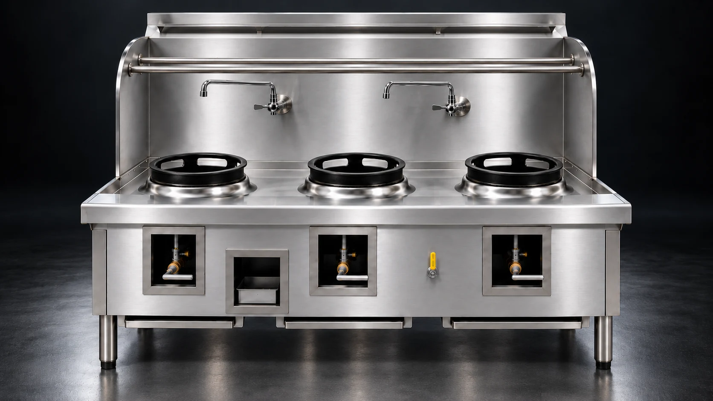
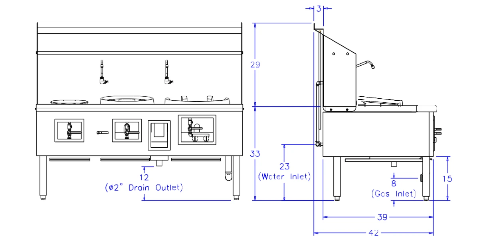

THE ALLSTRONG COOKING SERIES
Chinese Wok Range
Made for
the wok.
High heat. A purpose-built cooking line.
Stainless steel construction for the rhythm of a Chinese kitchen.
ARE-3 / 3-burner configuration shown
01 / A CLOSER LOOK
Built around
the cooking surface.
Wok chambers. Swing faucets.
A stainless steel work surface,
considered from every angle.
A place for every wok.
Seven standard chamber diameters, from 13″ to 24″. Specify the chamber size to suit your cooking line.
Water, within reach.
Manually controlled swing faucets sit between wok chambers. Choose a water-cooled top or waterfall backsplash system.
Independent drip trays beneath the burners collect debris. Front or rear drainage tunnel and basket options are available.
L-shaped gas-valve handles at knee level keep burner adjustment within reach while cooking. Two pipe racks are included.
02 / THE COMPLETE VIEW
Around
the range.
From the cooking surface
to the rear construction.
A continuous 360° product film.
03 / FIND YOUR FIT
Your kitchen.
Your configuration.
One to nine burners.
Select a model to explore
its size, output and connections.

Specifications shown for this model.
ARE-3 / 3-BURNER CONFIGURATION
- Overall size (L × W × H)*
- 72″ × 42″ × 62″
- Approx. weight*
- 600 lbs
- Gas inlet
- 1¼″
- Water inlet
- ½″
* Dimensions and weights are approximate, as listed in the manufacturer’s specification sheet. Confirm your configuration and utility requirements with Allstrong.
Compare all nine models
| Model | Burners | L × W × H (in.)* | Weight (lbs)* | Gas inlet (in.) | Water inlet (in.) | BTU/hr |
|---|---|---|---|---|---|---|
| ARE-1 | 1 | 30 × 42 × 62 | 300 | ¾ | ½ | 120,000 |
| ARE-2 | 2 | 56 × 42 × 62 | 500 | 1 | ½ | 240,000 |
| ARE-3 | 3 | 72 × 42 × 62 | 600 | 1¼ | ½ | 360,000 |
| ARE-4 | 4 | 92 × 42 × 62 | 800 | 1½ | ½ | 480,000 |
| ARE-5 | 5 | 120 × 42 × 62 | 1,000 | 1½ | ¾ | 600,000 |
| ARE-6 | 6 | 140 × 42 × 62 | 1,200 | 1½ × 2 | ¾ | 720,000 |
| ARE-7 | 7 | 160 × 42 × 62 | 1,400 | 1½ × 2 | ¾ × 2 | 840,000 |
| ARE-8 | 8 | 190 × 42 × 62 | 1,600 | 1½ × 2 | ¾ × 2 | 960,000 |
| ARE-9 | 9 | 210 × 42 × 62 | 1,800 | 1½ × 2 | ¾ × 2 | 1,080,000 |
* Approximate values. “× 2” denotes two connections of the stated size. Source: Chinese Wok Range specification sheet, Version 11.
04 / PLAN THE INSTALLATION
The dimensions.
The connections.
Manufacturer drawings, model sizes and utility connections. Download the complete specification sheet to plan your wok station.
Download specifications Open PDF
MANUFACTURER PLAN VIEWS / CHINESE WOK RANGE
FURTHER OPTIONS
Complete your line.
Explore burner choices and accessories with the factory.
Burner options
| Burner | Input rating (BTU/hr) |
|---|---|
| 18-Tip Duck Burner | 120,000 |
| 20-Tip Jet Burner | 120,000 |
| 23-Tip Jet Burner | 130,000 |
| 32-Tip Jet Burner | 140,000 |
Input ratings are per burner. Confirm the burner configuration and total range output with Allstrong.
Accessories & installation resources
- Cast iron wok rims / stainless steel options
- Soup pots & sauce pans
- Gas valves with handles & pilot lights
- Gas regulators
- Galvanized drip trays
- 9″ strainer basket holders
- Insulation chambers
Confirm accessory compatibility and the applicable installation manual with Allstrong.
LET’S TALK ABOUT YOUR KITCHEN
Make room
for the wok.
Tell us about your space, your menu
and the cooking line you have in mind.